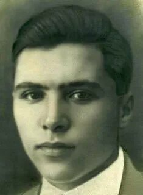

Люльков Григорий Фомич

Люльков Григорий Фомич (1916-1983г.г). Родился на хуторе Филоновском Волгоградской области. Член КПСС с 1942 года. Окончил военно-пехотное училище г.Владивостока, курсы усовершенствования командного состава. воевал на Западном и 1-м батальона, заместителем командира и командиром полка. В звании гвардии подполковника командовал 120-м стрелковым полком. 27.06.1944 года под его командованием полк, укрепленный гвардейскими минометами, артиллерией, саперами форсировал реку Синюю, преодолевая сопротивление врага, успешно осуществил операцию по освобождению города Осиповичи. За эту операцию Люльков Г.Ф. награжден орденом Ленина. За проведение успешных боевых действий на фронте в борьбе с немецко-фашистскими захватчиками награжден двумя орденами «Красного Знамени» и Орденом «Красной звезды», медалью «За боевые заслуги». С ноября 1944 года работал преподавателем Саратовского военно-политического училища. После окончания военной академии тыла и транспорта (1950) служил в составе Группы советских войск в Германии. Именем Г.Ф.Люлькова названа одна из улиц г.Осиповичи.Белорусском фронтах командиромЗвание «Почетный гражданин города Осиповичи» присвоено решением Осиповичского городского Совета народных депутатов 22 декабря 1978.
На главную